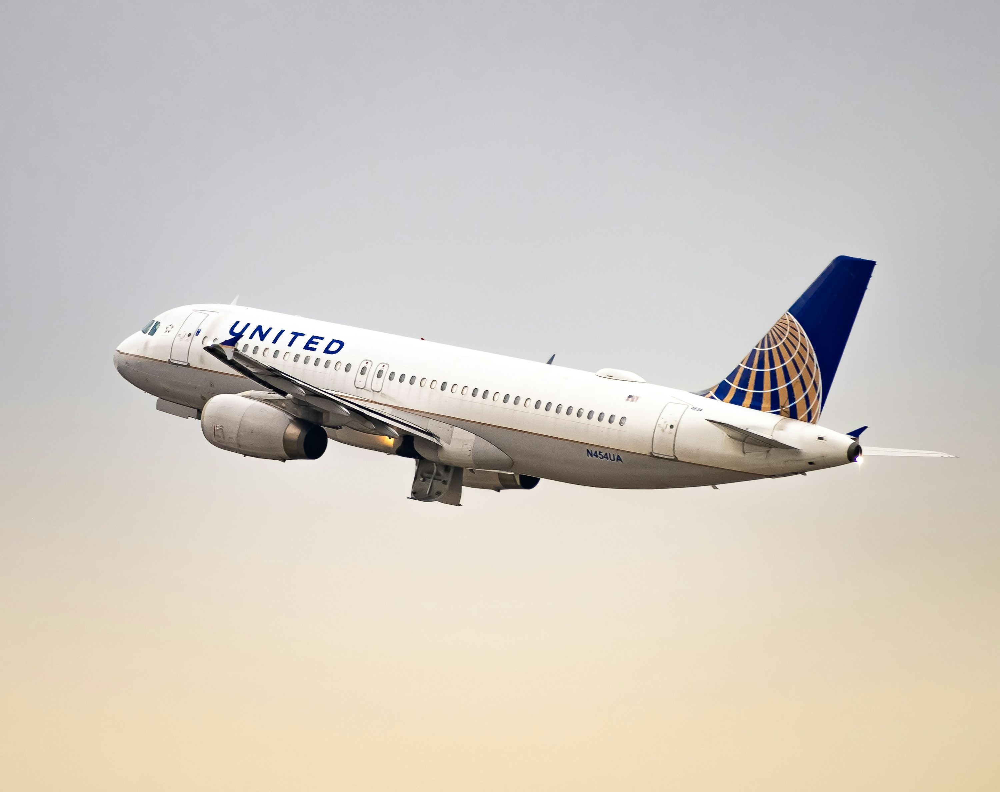

Kerala Trip Itinerary
Vadodara to Kochi
Assemble at Vadodara airport/station. Board your flight/train to Kochi. Check-in to hotel. Evening free at leisure.
Meals: Dinner
Kochi to Munnar
After breakfast, drive to Munnar (hill station). Visit tea plantations, waterfalls, and scenic viewpoints.
Meals: Breakfast, Lunch, Dinner

Munnar Sightseeing
Visit Eravikulam National Park, Mattupetty Dam, Echo Point, and enjoy the cool climate of Munnar.
Meals: Breakfast, Lunch, Dinner

Munnar to Thekkady
Travel to Thekkady. Visit Periyar Wildlife Sanctuary, spice plantations, and enjoy a traditional Kathakali show.
Meals: Breakfast, Lunch, Dinner
Thekkady to Alleppey (Houseboat)
Check-in to a traditional Kerala houseboat. Cruise through the famous backwaters of Alleppey and enjoy the scenery.
Meals: Breakfast, Lunch, Dinner
Return to Vadodara
Check out after breakfast. Drive back to Kochi and depart for Vadodara by afternoon/evening. Trip ends.
Meals: Breakfast, Lunch